运动医学 · 关节镜 创伤骨科 →
① 点黄色按钮复制全文（当前语言版本）→ 公众号编辑器 Ctrl+V（文字样式完整；若题图提示"上传失败"，见②）；② 题图单独传：点卡片右上角「复制题图」→ 回到编辑器中该题图位置 Ctrl+V，编辑器会直接当图片上传（100% 成功）；③ 拆发单篇用「复制本篇」。题图文件也在工作区 imgs 文件夹，可在编辑器手动上传。
SPORTS MEDICINE & ARTHROSCOPY DIGEST
运动医学 · 关节镜文献速览
第 014 期 · 2026-09-23
9月21–22日 10 本核心期刊 24 篇（剔除编辑评论与纯基础研究后精选 14 篇）
按部位分类：膝 6 · 肩 4 · 髋 2 · 踝足 1 · 运动防护 1 ｜ 含 4 篇系统综述/Meta · 2 篇国际专家共识 · 1 篇 RCT 亚组分析
编者按 EDITOR’S NOTE
本期覆盖 9 月 21–22 日（9 月 23 日 PubMed 尚无新收录），10 本核心期刊共检出 24 篇，剔除 3 篇编辑评论及 3 篇纯基础研究（绵羊模型、肩关节肌骨标本模拟、身体活动促进概念框架）后，精选 14 篇纳入本期。
本期最突出的主线是 ACL 重建的失败预测与术式选择，而且观点之间互相咬合：一篇 262 例倾向性评分匹配研究把术前被动胫骨前移（PATS）确立为翻修的独立危险因素并给出纵向演变轨迹；另一篇 281 例 RCT 亚组分析则显示 25 岁以下患者中，单纯 BPTB 重建的 5 年失败风险是「腘绳肌腱 + 前外侧韧带重建」的 4 倍（16.4% vs 4.8%）。与此同时，一项遗体研究把内侧与外侧胫骨后倾的作用拆开了——外侧后倾决定前向移位、内外侧后倾差决定内旋，为「差异性矫正」提供了机制基础。三条线索合起来，指向同一个方向：ACL 的稳定性是一个多平面问题，单纯重建韧带本身并不足以覆盖。
肩关节板块本期分量很重，且呈现「共识与争议并存」的有趣格局：2026 国际专家共识（Part I/II，97 位来自 15 国的肩关节外科医生）在诊断、肩胛下肌修复与肌腱转位这些领域达成了强共识，但在补片增强与上关节囊重建上几乎全线未能取得共识——这恰恰是当前临床上最热、也最缺乏证据的部分，值得作为「哪些能承诺、哪些不能」的界线来读。足踝方面则有一项针对慢性踝不稳的 RCT：频闪眼镜（视觉扰动）训练在女性排球运动员中带来额外的静态平衡与踝稳定感获益，给了康复处方一个新的可选工具。
▍膝关节 · 6 篇
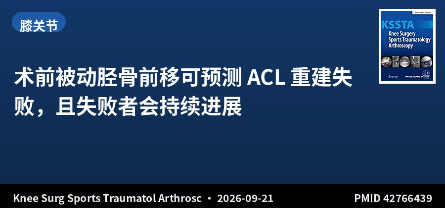
倾向性评分匹配 · III级证据 · 131+131例 · 随访≥48个月
术前被动胫骨前移可预测 ACL 重建失败，且失败者会持续进展
The Association Between Passive Anterior Tibial Subluxation and Anterior Cruciate Ligament Reconstruction Failure
Knee Surg Sports Traumatol Arthrosc · 2026-09-21 · 中国·上海交通大学附属第六人民医院（Wang JQ 团队） · PMID 42766439
一句话结论：131 例移植物失败患者与 131 例移植物完整对照按倾向性评分匹配（平均年龄 28.9±7.7 岁，女性 61 例 [23.3%]），随访≥48 个月。失败组在初次与二次 MRI 上的外侧（L-PATS）与内侧（M-PATS）被动胫骨前移均显著高于对照组（均 P<.05）；失败组呈现 PATS 的纵向显著进展，而移植物完整者无此变化（P<.05）。初次术前 L-PATS 与未来移植物失败显著相关（OR 1.166，P<.0）。二次 MRI 时间为失败组翻修前（中位 31.0 个月，IQR 19.1–58.0）与对照组术后 24 个月（中位 24.9 个月）。
要点：回顾性分析 2019 年 1 月至 2023 年 12 月行初次 ACL 重建的患者。所有患者初次重建前均行 MRI 评估；失败组于翻修术前、对照组于术后 24 个月行二次 MRI。采用多因素 logistic 回归与 ROC 曲线分析移植物失败的相关因素，多因素线性回归分析 PATS 纵向变化的影响因素。
对临床的启示：PATS 过去多被当作「失败之后观察到的现象」，这项匹配研究把它往前推了一步——初次损伤时测得的被动胫骨前移本身就与未来失败风险相关，而且失败者的 PATS 会持续加重，形成一条可追踪的恶化轨迹。临床价值在于：术前 MRI 上的 PATS 可以直接读出，不需要额外检查，可纳入术前风险评估，对 PATS 明显增大者可考虑更积极的稳定化策略（如联合前外侧结构处理）而非单纯韧带重建。需注意本研究来自单一团队、且对照组二次 MRI 的时间点与失败组不完全一致（24 个月 vs 中位 31 个月），组间比较存在时间偏倚。
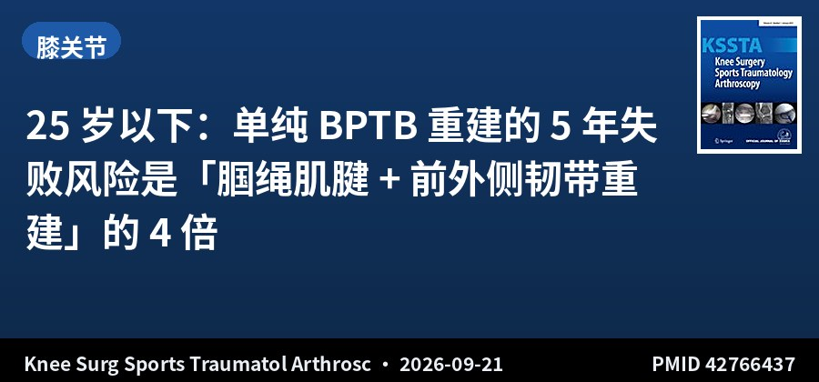
RCT预设亚组分析 · II级证据 · 281例 · 随访5年
25 岁以下：单纯 BPTB 重建的 5 年失败风险是「腘绳肌腱 + 前外侧韧带重建」的 4 倍
Fourfold Higher Graft Failure Risk With Isolated BPTB Versus Hamstring ACL Reconstruction With ALL in Patients Under 25 Years: A Prespecified Subgroup Analysis of a Randomized Controlled Trial
Knee Surg Sports Traumatol Arthrosc · 2026-09-21 · 欧洲多中心（前瞻性比较研究预设亚组分析） · PMID 42766437
一句话结论：281 例 25 岁以下患者（单纯 BPTB-ACLR 134 例，腘绳肌腱 + 前外侧韧带重建 HT-ACLR+ALLR 147 例）。5 年移植物失败率：单纯 BPTB 组 22 例（16.4%）vs HT-ACLR+ALLR 组 7 例（4.8%），P=.0013。Kaplan-Meier 分析显示 HT-ACLR+ALLR 组移植物生存率显著更优（log-rank P=.0008）。多因素分析中，单纯 BPTB-ACLR 是移植物失败的独立危险因素（OR 4.2，95%CI 1.8–11.3，P=.0007；HR 4.2，95%CI 1.9–10.7，P=.0002）。两组 KOOS、IKDC、Lysholm、Tegner 等患者报告结局在随访时无显著差异。
要点：对一项前瞻性比较研究中 25 岁以下的患者进行预设亚组分析。患者分别接受单纯 BPTB-ACLR 或腘绳肌腱 ACLR 联合前外侧韧带重建（HT-ACLR+ALLR）。主要结局为 5 年移植物失败，次要结局为 KOOS、IKDC、Lysholm 与 Tegner 评分。采用 Kaplan-Meier 生存分析与 log-rank 检验，并以多因素 logistic 回归与 Cox 比例风险模型识别独立危险因素。
对临床的启示：这个 4 倍差距的量级在 ACL 领域相当少见，值得认真对待——但读的时候必须抓住两个限定条件：一是预设亚组分析（非主要终点），二是比较的是「单纯 BPTB」对「腘绳肌腱 + ALLR」两种完整术式组合，因此无法区分获益究竟来自移植物选择还是来自额外的前外侧韧带重建。临床上更稳妥的解读是：对 25 岁以下的年轻、高需求患者，单纯 BPTB 可能不是最优解，加做前外侧结构重建或更换移植物类型值得讨论。另一个关键点是两组功能评分无差异——这说明失败率的差异主要体现在再次手术风险，而非日常功能感受，术前谈话时可以据此说明获益的具体形式。
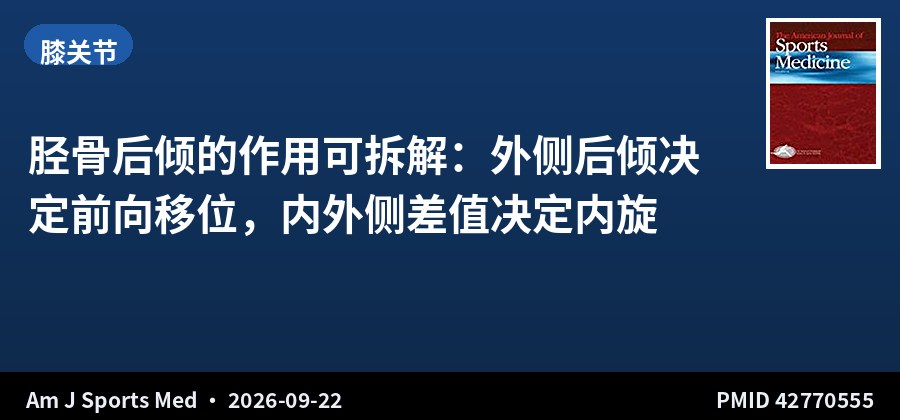
遗体生物力学 · 8例标本 · 单髁截骨控制变量
胫骨后倾的作用可拆解：外侧后倾决定前向移位，内外侧差值决定内旋
Lateral Tibial Posterior Slope Induces Anterior Tibial Translation While Lateral-Medial Slope Difference Induces Internal Rotation: A Cadaveric Biomechanical Study
Am J Sports Med · 2026-09-22 · 美国（对照实验室研究） · PMID 42770555
一句话结论：8 具新鲜冰冻膝关节标本安装于定制压缩/扭转加载装置，在 500 N 轴向压力下于膝屈曲 0° 与 20° 用光学运动追踪测量胫股移位/旋转。通过单髁胫骨后倾截骨（保留关键韧带与半月板根部附着）与 3D 打印楔块，将内、外侧后倾独立调整至 -5°、0°、+5°、+10°。外侧后倾增加 +10° 显著增加前向胫骨移位（ATT）；而胫骨后倾差值（外侧减内侧，delta PTS）增大则增加内旋（IR）。
要点：在轴向载荷下，通过单髁胫骨后倾改变截骨分别独立调整内侧与外侧胫骨平台后倾，保留关键韧带与半月板根部附着。在前屈与肩胛平面外展等不同运动平面下测量肌肉力量、肱骨头移位与肩胛应变。采用重复测量方差分析与事后检验。
对临床的启示：既往研究多把胫骨后倾当作一个整体来调整，这项研究把它分解到内外侧两个平台，结论很干净：前向稳定性归外侧、旋转稳定性归内外侧差值。这为「差异性矫正」（differential correction）提供了直接的生物力学依据——例如对以旋转不稳为主的患者，单纯整体减小后倾可能并不对症，而应针对内外侧差值下手。这是实验室研究，尚需临床验证，但它给出了一个明确可检验的假说，对做截骨联合 ACL 重建的团队有实际参考价值。
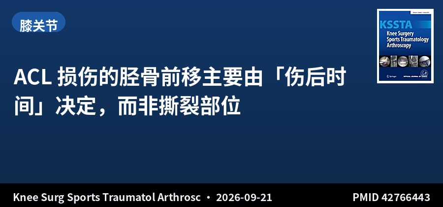
回顾性队列 · III级证据 · 521例 · 数字关节计测量
ACL 损伤的胫骨前移主要由「伤后时间」决定，而非撕裂部位
Anterior Tibial Translation in ACL-Deficient Knees Is Increased Regardless of Tear Location and Independently Associated With Early-to-Intermediate Injury Chronicity
Knee Surg Sports Traumatol Arthrosc · 2026-09-21 · 单术者回顾性研究 · PMID 42766443
一句话结论：纳入 521 例 ACL 损伤手术患者（2019-10 至 2026-01）。术前用 Lachmeter® 数字关节计测量胫骨前移侧-侧差值（ATT-SSD），撕裂按改良 Sherman 分类，按就诊时间分为急性（<28 天）、亚急性（28–90 天）、慢性（>90 天）。ATT-SSD 在不同撕裂类型间存在差异（P=.006），III–V 型较 I 型平均大 0.5 mm（P=.004）；急性损伤 ATT-SSD 大于亚急性与慢性（4.6±1.5 vs 4.2±1.5 vs 4.0±1.5 mm，P=.005）。撕裂类型 × 伤后时间的交互作用不显著（B=0.019，P=.951）。多因素回归中仅伤后时间与 ATT-SSD 独立相关（B=-0.205，P=.032），撕裂部位并非独立相关因素。所有撕裂类型的平均 ATT-SSD 均高于临床有意义阈值 3 mm。合并内侧半月板修复者 ATT-SSD 更高。
要点：单术者回顾性研究，用 Lachmeter® 数字关节计测量术前 ATT-SSD，按改良 Sherman 分类记录关节镜下撕裂类型，并按距首次就诊时间分为急性、亚急性、慢性三组。采用方差分析、亚组比较、交互分析与多因素线性回归评估撕裂类型、伤后时间、半月板修复与 ATT-SSD 的关系。
对临床的启示：这项研究纠正了一个常见的临床直觉：很多人认为撕裂越完全、部位越靠近股骨侧，前向不稳就越重，但多因素分析显示真正独立相关的是伤后时间——急性期 ATT-SSD 反而最大，随时间推移下降。这可能反映急性期血肿、疼痛性肌肉抑制与关节囊松弛的共同作用，而非结构性损伤程度的差异。实践提示：拿关节计测量值比较不同患者时要考虑测量时机，急性期数值偏高不应直接解读为损伤更重。另一条实用信息是无论何种撕裂类型，平均 ATT-SSD 都超过 3 mm 这一临床阈值，说明 ACL 断裂后前向不稳普遍存在。
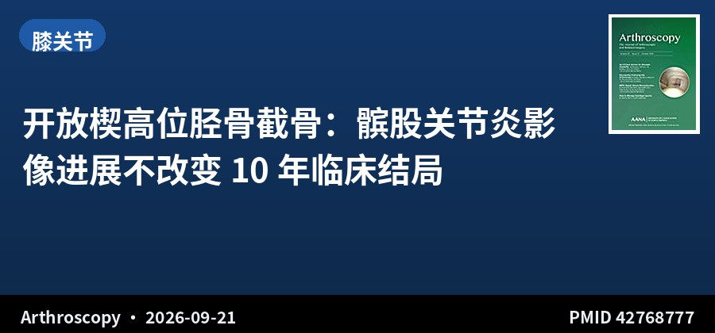
长期随访队列 · III级证据 · 168膝 · 随访≥10年
开放楔高位胫骨截骨：髌股关节炎影像进展不改变 10 年临床结局
Radiographic Progression of Patellofemoral Osteoarthritis Is Not Associated With Long-Term Clinical Outcomes After Open-Wedge High Tibial Osteotomy: A 10-Year Minimum Follow-Up
Arthroscopy · 2026-09-21 · 韩国（连续病例长期随访） · PMID 42768777
一句话结论：纳入 168 膝，平均随访 12.2 年（范围 10.0–16.9）。10 年生存率 91.3%，无因髌股关节炎行膝关节置换者。髌股关节炎影像进展发生于 55.4%（93/168）。进展组与非进展组的 KOOS 髌股亚量表（68.5 vs 69.8，P=.533）与 HSS 髌骨评分（89.0 vs 91.0，P=.179）均无显著差异。多因素 logistic 回归显示髌股关节炎进展的预测因素为矫正角（OR 1.361，P=.004）与术前髌股关节 Kellgren-Lawrence 分级。
要点：回顾性分析 2007–2014 年因内侧间室骨关节炎或骨坏死接受开放楔高位胫骨截骨、随访≥10 年的连续病例。按术前至末次随访 Kellgren-Lawrence 分级变化分为髌股关节炎进展组（增加≥1 级）与非进展组。临床结局采用 KOOS 髌股亚量表与 HSS 髌骨评分，以转换为膝关节置换为终点行生存分析。
对临床的启示：超过一半的膝在 10 年随访中出现髌股关节炎影像进展，这个数字乍看令人担忧，但研究给出了一个务实结论：影像进展与患者实际感受并不同步——两组功能评分几乎重合，10 年生存率仍达 91.3%。这对术前谈话很有价值：可以明确告诉患者，截骨术后髌股关节的影像学变化较常见，但不必然意味着需要再次手术或功能变差。同时研究指出了两个可干预的风险因素——矫正角过大与术前已存在的髌股退变，提示术中避免过度矫正仍是可把握的环节。
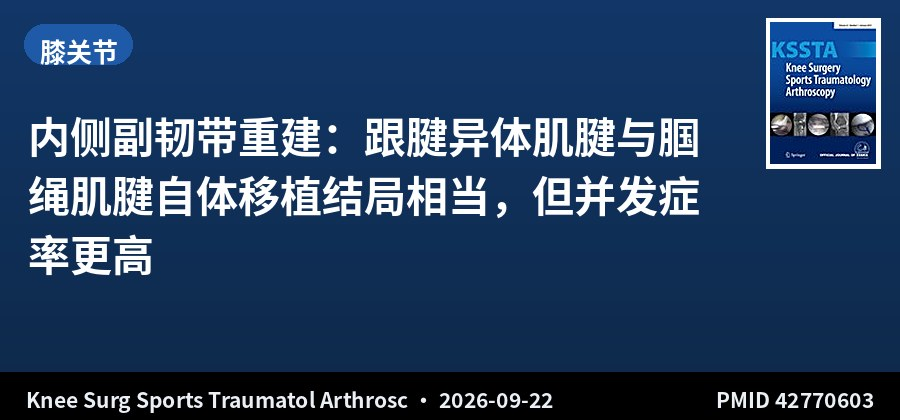
系统综述 · III级证据 · 16项研究 · 382例
内侧副韧带重建：跟腱异体肌腱与腘绳肌腱自体移植结局相当，但并发症率更高
Clinical Outcomes and Complication Rates Following Medial Collateral Ligament Reconstruction Using Achilles Tendon Allograft or Hamstring Tendon Autograft: A Systematic Review
Knee Surg Sports Traumatol Arthrosc · 2026-09-22 · 英国（系统综述） · PMID 42770603
一句话结论：纳入 16 项研究：6 项跟腱异体移植（n=107，其中 4 项带骨块）、10 项腘绳肌腱自体移植（n=275）。平均年龄分别为 33.9 与 31.3 岁，平均随访 37 与 29.1 个月。术后 IKDC 与 Lysholm 评分：异体移植 81.1 / 86.8，自体移植 78.8 / 87.2。报告术前术后 PROMs 的研究均显示显著改善（P<.05）。并发症率：跟腱异体移植 11.2% vs 腘绳肌腱自体移植 4.0%。异体移植并发症包括 2 例移植物失败、4 例残余无症状外翻不稳、3 例感染及 3 例其他；自体移植包括 1 例移植物失败、4 例外翻不稳等。
要点：按 PRISMA 指南于 2026 年 2 月 11 日检索 PubMed、Cochrane、Google Scholar 与 Scopus。纳入近 20 年发表、年龄≥16 岁、接受腘绳肌腱自体或跟腱异体 MCL 重建并报告临床/功能/患者报告结局的研究，完成数据提取与偏倚风险评估。因异质性较大，结果以叙述性综合呈现。
对临床的启示：MCL 是膝关节最常受伤的韧带，但重建指征至今仍有争议——这项综述说明两种主流移植物在功能结局上基本持平（IKDC 与 Lysholm 差距均在 3 分以内），选择的分水岭其实在并发症：异体移植组并发症率接近自体移植的 3 倍，且感染 3 例值得警惕（可能与人源组织相关）。务实建议是，在同等条件下优先考虑腘绳肌腱自体移植；选择异体跟腱时（如需保留腘绳肌腱或追求更快康复）应向患者说明感染与残余不稳的风险。局限是证据以叙述性综合为主、缺乏头对头 RCT，且两组随访时间不齐。
▍髋关节 · 2 篇
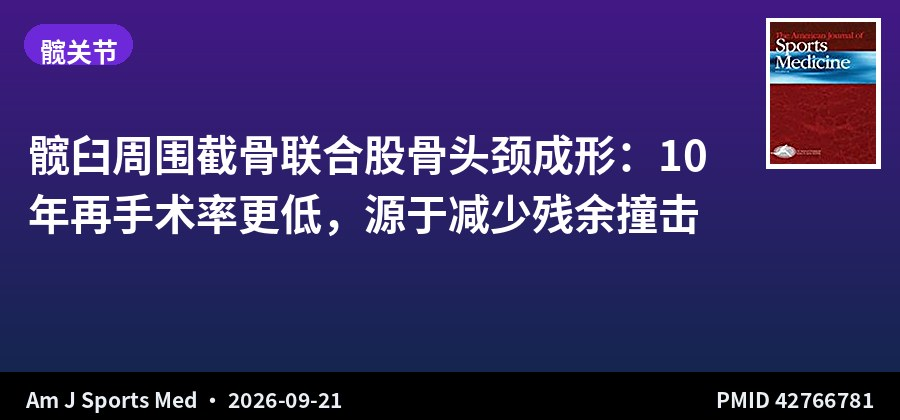
长期队列随访 · III级证据 · 38 vs 42髋 · 平均10年
髋臼周围截骨联合股骨头颈成形：10 年再手术率更低，源于减少残余撞击
Periacetabular Osteotomy and Combined Open Femoral Head-Neck Junction Osteochondroplasty: A Concise Follow-up of a Previous Report at a Mean 10-Year Follow-up
Am J Sports Med · 2026-09-21 · 美国（队列研究，前次报告的长期随访） · PMID 42766781
一句话结论：38 例（38 髋）行 PAO + 股骨头颈交界骨软骨成形（OCP），与 42 例（42 髋）单纯 PAO 的匹配对照比较（2000–2007 年）。PAO+OCP 组平均随访 10.6 年（6.9–16.3），单纯 PAO 组 11.8 年（7.2–17.2）。两组在结局改善、MCID、PASS 达标率与临床失败率上相似；但单纯 PAO 组再手术率更高，主要归因于残余撞击。结局指标为改良 Harris 髋关节评分（mHHS）与 WOMAC；失败定义为临床失败（未达 mHHS 的 MCID 或 PASS）、转全髋置换、再手术或复合失败。
要点：回顾性分析 2000–2007 年间行 PAO+OCP 与单纯 PAO 的患者，按匹配对照设计比较 10 年以上的结局、再手术率、影像学、生存率与并发症。本研究为既往报告结果的长期随访更新。
对临床的启示：髋发育不良患者往往同时存在股骨头颈交界区的撞击形态，这个矛盾过去处理得比较保守——怕在已经不稳定的髋上再增加操作。这项 10 年随访给出了明确的支持性证据：加做 OCP 不增加风险、不影响功能结局，但能显著降低因残余撞击而进行的二次手术。换句话说，PAO 时同期处理股骨头颈畸形是一次把问题解决干净的合理机会。样本量偏小（38 vs 42 髋）是主要局限，且为单中心回顾性设计。
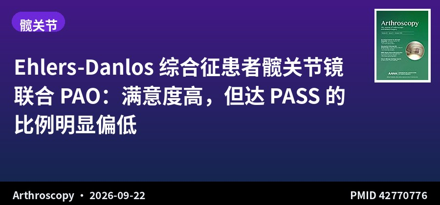
对比队列 · III级证据 · 26例EDS vs 103例非EDS · 随访≥2年
Ehlers-Danlos 综合征患者髋关节镜联合 PAO：满意度高，但达 PASS 的比例明显偏低
Ehlers-Danlos Patients Achieve High Satisfaction and Clinically Meaningful Outcomes After Combined Hip Arthroscopy and Periacetabular Osteotomy: A Comparative Study With Non-Ehlers-Danlos Syndrome Patients
Arthroscopy · 2026-09-22 · 美国（三级髋关节保留中心） · PMID 42770776
一句话结论：EDS 组 26 例 vs 非 EDS 组 103 例，平均年龄 28.7±6.2 岁 vs 25.1±4.2 岁（P=.01）。两组 1 年与 2 年满意度均超过 80%，iHOT-12、PROMIS-PF 与 PROMIS-抑郁的 MCID 一致性分析组间可比。但 EDS 组的绝对 PASS 与最大结局改善达成率更低，尤其是 PROMIS-PF：EDS 患者 1 年绝对 PASS 达标率 43%，而非 EDS 为 78%。
要点：前瞻性收集 2018–2023 年在三级髋关节保留中心接受髋关节镜（HA）+ 髋臼周围截骨（PAO）的患者资料并回顾性分析。纳入髋发育不良或不稳且随访≥2 年者。EDS 组均由外院诊断为遗传或非遗传亚型。结局指标包括 iHOT-12 与 PROMIS 计算机自适应测试（躯体功能、整体躯体健康、整体精神健康、疼痛干扰），计算 MCID、PASS 与最大结局改善。
对临床的启示：这是一项对 EDS 患者术前谈话极其重要的研究：一方面好消息是这类患者做 HA+PAO 后满意度确实很高（>80%），说明手术并非禁忌；另一方面必须说实话——达到「可接受症状状态」这一更高标准的比例只有 43%，远低于非 EDS 的 78%。这两组数字并不矛盾，它反映的是 EDS 患者症状基线更差、对残余不适更敏感，因而「改善明显」与「感觉满意」之间存在落差。临床上应据此设定更现实的期望值，把「功能显著改善」而非「完全无症状」作为主要目标。样本量偏小（仅 26 例 EDS）是主要局限。
▍肩关节 · 4 篇
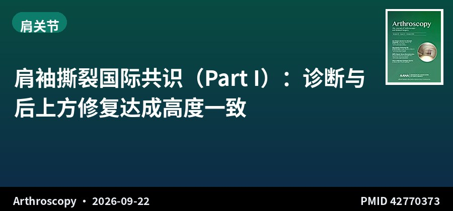
国际专家共识 · Part I · 97位专家 · 15国 · 50条陈述
肩袖撕裂国际共识（Part I）：诊断与后上方修复达成高度一致
Rotator Cuff Tears Part I: Diagnosis, Nonoperative Management, and Repair of Posterosuperior Tears—An International Expert Consensus Statement
Arthroscopy · 2026-09-22 · 国际共识（97 位肩关节/运动医学外科医生，15 个国家） · PMID 42770373
一句话结论：97 位来自 15 个国家的肩关节/运动医学外科医生参与，覆盖 9 个子专题。Part I 的 50 条共识陈述中，30 条达成强共识（90%–99% 同意）、17 条达成共识（80%–89%）、仅 3 条未达任何共识。诊断领域全部达成强共识，确立了病史、体检、分型与影像的标准化路径；专家一致认为评估应强调受伤机制、组织质量与活动水平，并按大小、受累肌腱、厚度、脂肪浸润与回缩程度分型。非手术治疗方面，共识支持对多数部分厚度或慢性全层撕裂先行康复与活动调整；对老年、低需求或身体条件不适合手术的创伤性撕裂，非手术仍是合适选择；皮质类固醇注射可发挥作用，但注射后手术应推迟数周。
要点：采用正式共识流程，设 9 个专门子专题：（1）诊断，（2）非手术治疗，（3）后上方撕裂修复，（4）肩胛下肌修复，（5）补片/移植物增强与上关节囊重建，（6）肌腱转位，（7）反式全肩关节置换，（8）翻修手术，（9）康复、重返运动与随访。共识定义为 80%–89% 同意，强共识 90%–99%，一致共识 100%。
对临床的启示：Part I 的价值在于它划出了一条相对清晰的「可信区间」——诊断、分型与非手术治疗这些基础环节，国际专家意见高度统一，说明这些内容已经可以标准化落地，直接可用于规范门诊流程。特别实用的是注射后「延迟数周再手术」这一条，属于容易被忽视但感染风险相关的操作细节。反面看，如此庞大的专家组在基础诊断上都能达成强共识，恰恰反衬出后续板块（见 Part II）在增强与重建上的分歧之深——这两个部分宜对照阅读。
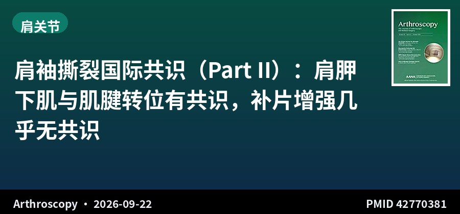
国际专家共识 · Part II · 97位专家 · 48条陈述
肩袖撕裂国际共识（Part II）：肩胛下肌与肌腱转位有共识，补片增强几乎无共识
Rotator Cuff Tears Part II: Subscapularis Repair, Augmentation, and Tendon Transfer—An International Expert Consensus Statement
Arthroscopy · 2026-09-22 · 国际共识（97 位肩关节/运动医学外科医生，15 个国家） · PMID 42770381
一句话结论：第二部分 48 条陈述中，1 条达成一致共识、21 条强共识、10 条达成共识、16 条未达任何共识。肩胛下肌修复的所有陈述均达成强共识，涵盖手术入路、锚钉数量、术中评估策略以及无张力修复、充分松解、保护神经血管结构等核心原则。相反，补片/移植物增强与上关节囊重建呈现明显分歧，多数陈述未能达成共识——在最佳移植物类型、增强方式以及球囊、肌腱成形、肩峰补片的理想指征上均无一致意见。肌腱转位则在核心适应证、禁忌证与技术原则方面达成强共识，专家一致认为肌腱转位适用于较年轻患者（详见原文）。
要点：与 Part I 同一共识流程（97 位外科医生、9 个子专题）。本部分报告子专题 4（肩胛下肌修复）、5（补片/移植物增强与上关节囊重建）与 6（肌腱转位）的结果。共识定义为 80%–89% 同意，强共识 90%–99%，一致共识 100%。
对临床的启示：Part II 最有价值的产出其实是一个「负面结论」：补片增强、上关节囊重建这类近年最热门的技术，在 97 位国际专家之间连最基本的一致意见都形不成——16 条陈述完全未达成共识。这为临床提供了重要的边界感：这些技术目前缺乏足够证据支撑常规使用，更适合放在临床研究框架内开展，而非作为标准选项向患者推荐。相对照的是肩胛下肌修复与肌腱转位已高度规范，可以作为成熟技术放心执行。把 Part I 与 Part II 合起来读，等于得到一张「肩袖治疗技术成熟度地图」。
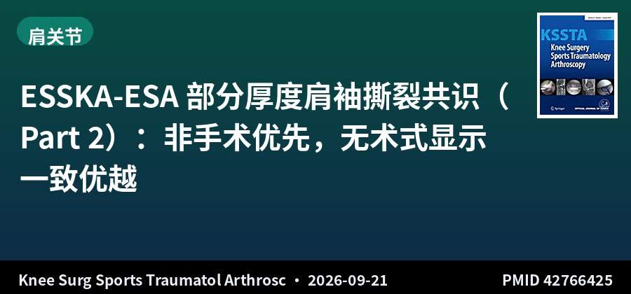
ESSKA-ESA正式共识 · Part 2 · 33个问题 · 21组强一致
ESSKA-ESA 部分厚度肩袖撕裂共识（Part 2）：非手术优先，无术式显示一致优越
The 2026 ESSKA-ESA Formal Consensus on Partial-Thickness Posterosuperior Rotator Cuff Tears (Part 2): Treatment Strategies, Rehabilitation, Return to Sport and Complications
Knee Surg Sports Traumatol Arthrosc · 2026-09-21 · 欧洲（ESSKA-ESA 正式共识方法学） · PMID 42766425
一句话结论：由 13 位肩关节外科医生组成的指导组基于标准化文献回顾制定 33 个问题与陈述，并由 20 位独立评审专家经三轮共识流程评定。21 组问题-陈述对达成强一致，产生 30 条推荐（1 条 A 级、6 条 B 级、10 条 C 级、13 条 D 级）。A 级证据确认：与「撕裂完成后再修复」相比，经腱修复关节侧部分厚度撕裂的术后僵硬风险增加。B 级证据支持：保守治疗至少 6 个月、富血小板血浆注射、术前先处理僵硬；经腱/原位修复与撕裂完成-修复的重返运动率相似，但后者再撕裂率略高。管理应依据患者特征（活动水平、运动参与）、症状、撕裂形态与组织质量个体化制定，而非套用单一治疗流程；非手术治疗是首选的初始方案，尚无任何术式显示出一致的优越性。
要点：依照 ESSKA 正式共识方法学开展。指导组（13 位肩关节外科医生）制定 33 个问题与陈述并依证据等级赋予 A–D 级推荐；独立评审组（20 位肩关节外科医生）经三轮共识流程进行评估。本部分涵盖治疗策略、康复、重返运动与并发症。
对临床的启示：这份共识与 Arthroscopy 的肩袖专家共识形成了有趣的呼应：两份独立共识都指向「非手术优先、无术式一致优越」这一保守结论，说明目前部分厚度肩袖撕裂的治疗仍处于证据不充分的阶段。最具操作价值的是 A 级证据那一条——经腱修复会增加术后僵硬风险，而撕裂完成-修复虽然再撕裂率略高但重返运动率相当，这提示对关节侧撕裂选择术式时，僵硬的代价可能被低估了。PRP 获 B 级支持也与既往研究印象一致。注意 30 条推荐中 13 条为最低的 D 级，说明整体证据质量仍薄弱。
队列研究 · III级证据 · 181例 · 10–19岁
青少年复发性肩关节不稳：三分之一初诊即为双极骨缺损，单纯 Bankart 修复恐不足
Indications for Isolated Arthroscopic Bankart Repair in the Adolescent Shoulder May Be Limited: Bipolar Bone Loss and Low Distance to Dislocation Found Commonly in an Adolescent Population With Glenohumeral Instability
Am J Sports Med · 2026-09-22 · 美国单一三级转诊中心 · PMID 42770535
一句话结论：回顾性分析 181 例 10–19 岁前向肩关节不稳患者（2022-01 至 2024-03）。MRI 测量关节盂骨缺损、Hill-Sachs 间期、on-track/off-track 状态与脱位距离（DTD）。总体 74.6% 存在骨缺损；34.3% 为双极骨缺损；7.2% 为 off-track；41.4% 的 DTD <10 mm。在首次脱位的患者中，69.2% 已存在骨缺损、37.4% 的 DTD 已 <10 mm。双极骨缺损与年龄较大显著相关（16.29 vs 15.61 岁）；男性与既往脱位≥5 次为独立预测因素。
要点：单一三级转诊中心 2022 年 1 月至 2024 年 3 月诊断为前向肩关节不稳的 10–19 岁患者，在 MRI 上测量关节盂骨缺损、Hill-Sachs 间期、on-track/off-track 状态与脱位距离（DTD）。采用卡方与 Mann-Whitney 检验评估双极骨缺损与患者特征、运动参与及既往脱位史的关系。研究假设为男性、年龄较大、脱位次数多与接触性运动参与与双极骨缺损相关。
对临床的启示：这组数据对青少年肩关节不稳的处理有直接的警示意义：74.6% 初诊即存在骨缺损、三分之一已是双极骨缺损，且首次脱位的患者中就有近 37% 的 DTD 小于 10 mm——也就是说「第一次脱位」并不等于「骨性结构完好」。传统上对青少年倾向做单纯 Bankart 修复以保留骨量，但本研究表明相当一部分患者的结构基础本就不适合该术式，失败风险高。临床要点是把 MRI 骨缺损评估（尤其 DTD 与 on/off-track）作为青少年肩关节不稳的常规必查项，男性、脱位≥5 次者尤需警惕，必要时考虑骨性增强手术。局限是单中心回顾性、样本量 181 例、缺乏术后失败率数据。
▍踝足 · 1 篇
随机对照试验 · II级证据 · 24例 · 8周干预
频闪眼镜平衡训练在慢性踝不稳女性排球运动员中带来额外获益
Stroboscopic Versus Traditional Balance Training in Female Volleyball Players With Chronic Ankle Instability: A Randomized Controlled Trial
Sports Health · 2026-09-22 · 随机对照试验（Level 2） · PMID 42770538
一句话结论：24 例慢性踝关节不稳（CAI）女性排球运动员随机分为频闪组（A 组，n=10）与传统组（B 组，n=14）。两组均接受每周 2 次、共 8 周的监督下平衡训练，A 组使用 Senaptec 频闪眼镜。评估静态平衡（Performanz 平衡系统）、动态平衡（Y 平衡测试）、跳跃表现（垂直跳与单腿跳）、本体感觉（关节位置觉）与功能（CAIT、FAAM-S）。A 组在动态平衡后外侧方向伸展方面改善；两组神经肌肉表现均有提升，但频闪训练在静态平衡与主观踝关节稳定感上提供了额外获益。
要点：随机对照试验（Level 2 证据）。24 例 CAI 女性排球运动员随机分配至频闪组或传统组，均接受每周 2 次、共 8 周的监督下平衡训练，频闪组使用 Senaptec 频闪眼镜（通过操控视觉输入增强感觉运动控制）。评估静态平衡、动态平衡、跳跃表现、本体感觉与功能量表（CAIT、FAAM-S）的干预前后变化。
对临床的启示：对足踝运动医学的康复处方是有价值的新选项：频闪眼镜通过间歇性遮蔽视觉输入，迫使患者更多依赖本体感觉与视觉-前庭整合，本质上是给平衡训练加了「感觉难度」。结果显示两组都能改善神经肌肉表现，但频闪训练在静态平衡与「感觉踝关节更稳」这两项上额外胜出——后者尤其重要，因为主观稳定感与再损伤恐惧直接关系到重返运动的心理准备。务实解读：频闪训练可作为传统平衡训练的低成本增效补充，而非替代。注意样本量很小（仅 24 例、两组不均衡 10 vs 14），效应值需在更大样本中确认。
▍运动防护 · 1 篇
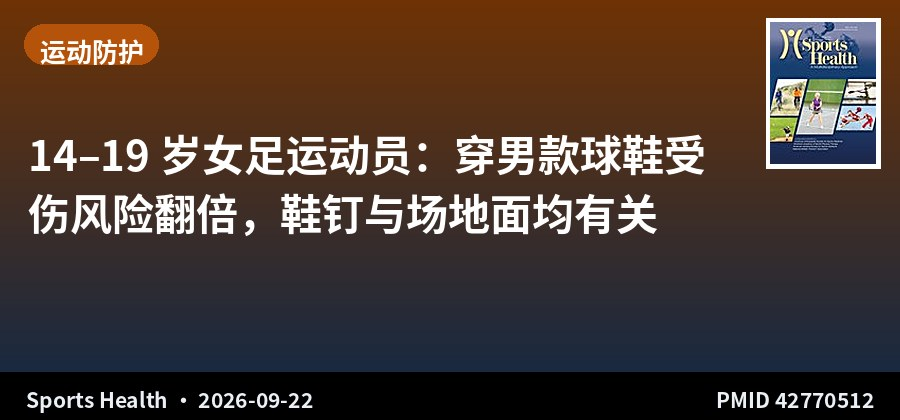
横断面调查 · IV级证据 · 99名14–19岁女足运动员
14–19 岁女足运动员：穿男款球鞋受伤风险翻倍，鞋钉与场地面均有关
Football Cleats and Injury Patterns in 14- to 19-Year-Old Female Football Players: The Effect of Surface, Gender-Specific Shoe Gear and Cleat Pattern
Sports Health · 2026-09-22 · 美国（POP 试点调查研究） · PMID 42770512
一句话结论：POP 试点研究通过匿名在线平台调查 99 名美国 14–19 岁女足运动员（平均 16.54±1.16 岁），完成率 100%，涵盖受伤与未受伤者。60% 报告曾受伤，其中踝关节扭伤占 36.7%、ACL 撕裂占 20%。穿男款球鞋者受伤风险是穿女款球鞋者的 2 倍；穿女款球鞋者报告舒适度与贴合度更佳。硬质场地（firm ground）无论鞋钉类型如何，均与接近 2 倍的受伤风险相关。总体而言，使用女性专用鞋具呈现保护性获益。
要点：保护我们的球员（Protect our Players, POP）试点研究，通过匿名在线平台对美国 99 名 14–19 岁女足运动员进行回顾性横断面调查，同时纳入受伤与未受伤者，分析下肢损伤与鞋具、场地之间的关联，为后续大规模研究提供方向。证据级别 Level 4。
对临床的启示：这是那种「结论简单、但可以直接说给患者和家长听」的研究：给女足女孩买女款球鞋。女款鞋具在楦型、足弓支撑与踝部包裹上针对女性足型设计，穿男款鞋导致的风险翻倍，说明鞋具不匹配是一个被低估的可干预环节。硬质场地与近 2 倍受伤风险相关，则提示场地面性质（而不仅是鞋钉类型）应纳入损伤预防考量，这属于球队与场地管理层面的干预点。需要注意这是一项仅 99 人、自报数据、无随访的试点调查，关联强度不足以作为因果结论，但作为提出假说与宣教材料已经足够有力。
关于本栏目：每日定时检索 AJSM、Arthroscopy、Arthroscopy Techniques、KSSTA、Sports Health、OJSM、J ISAKOS、Sports Medicine、Foot & Ankle International、JSES 共 10 本运动医学核心期刊前一日新收录文献，按关节分类，AI 辅助生成中英文精要。
声明：本内容由 AI 辅助整理，仅供学术交流参考，观点与数据请以原文为准，不构成诊疗建议。文献题录与摘要来源：PubMed。
— Sports Medicine & Arthroscopy Digest · Issue 014 —